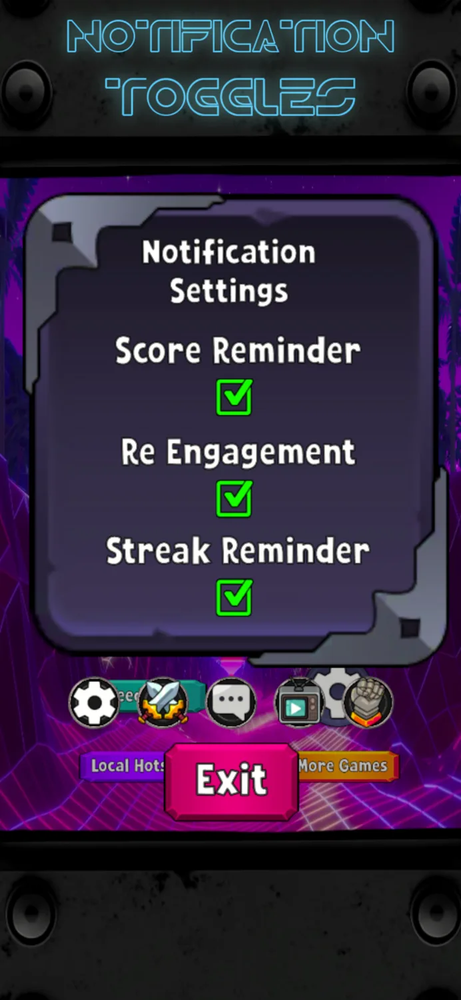
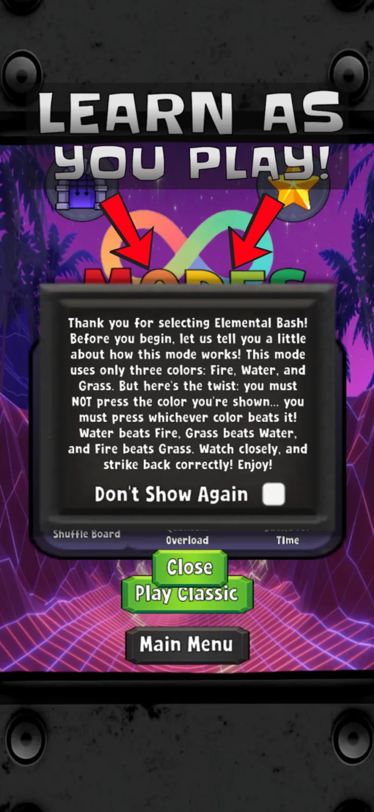
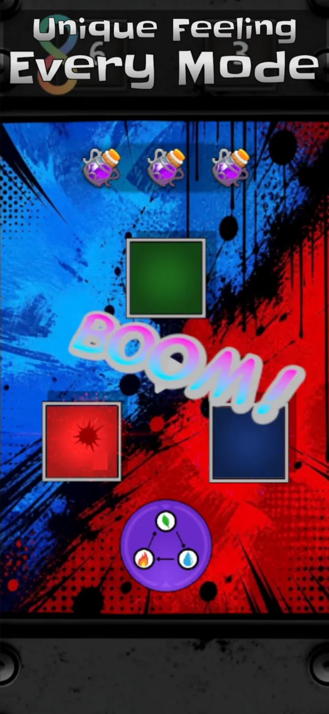

Home › Features › User Customizable Features
User Customizable Features
Mimic Masters adapts to how you like to play. Nearly everything the game does on its own can be switched off, and every switch is in Settings.
Game Settings
- Streak Feedback: the board and screen react more as your streak builds. Turn it off for a calmer screen.
- Adaptive Difficulty: the game gently adjusts to how you're doing, so it stays challenging without becoming frustrating. Turn it off to play the fixed difficulty curve.
- Session End Messaging: a short note at Game Over showing how close you came to your best.
- Mastery Display: your overall skill rating across all modes.
- Break Prompts: an occasional reminder to rest your eyes and stretch.
- Mode Recommendations: suggestions for which mode to try next, based on how you play.
- Accessibility Suggestions: if the game notices you keep missing for the same reason, such as tapping just a little too late, it may offer a more relaxed pace. It's always an offer, never automatic.

Notification Settings
Mimic Masters can send up to three kinds of reminder, and each one has its own switch:
- Score reminders: when you're close to beating your best.
- Come-back reminders: a nudge if you haven't played in a while.
- Streak reminders: so you don't lose your daily streak.
Reminders are capped at two a day, spaced hours apart. Turn any of them off in Settings, or all of them in your phone's settings.

Learn As You Play
Every mode has a short how-to-play screen before it starts. Once you know a mode, tick ‘Don't Show Again’.

A Unique Feel in Every Mode
Seven modes, seven ways to play. From Classic's growing patterns to Elemental Bash's rock-paper-scissors twist and Quantum Overload's eight-colour gauntlet, each mode has its own rules and its own feel.
